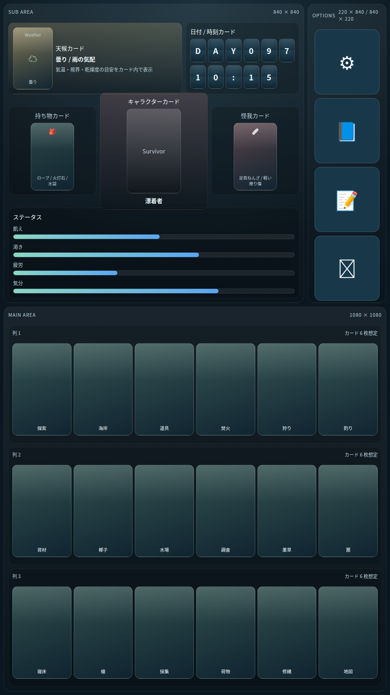
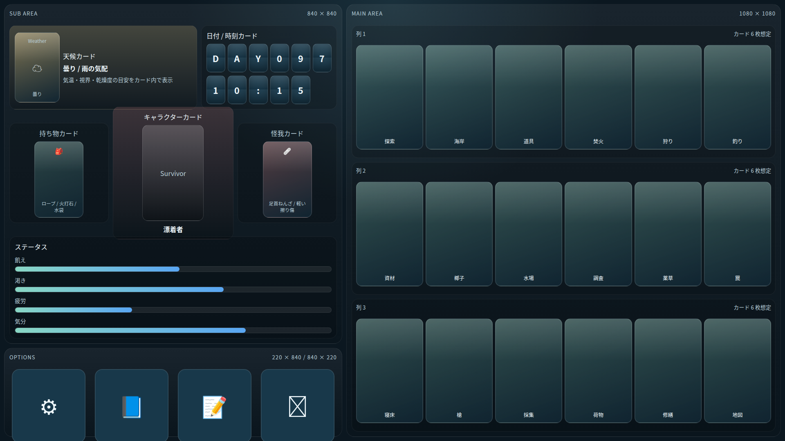

ScreenLayout
画面レイアウト検討
UnmappedIsland のゲーム画面レイアウトを検討するためのモックです。 縦型・横型を 1 つに統合したレスポンシブなスタンドアロン HTML モックです。画面の向きに応じてレイアウトが切り替わります。
レイアウト概要
| 向き | 解像度 | メインエリア | サブエリア | オプションエリア |
|---|---|---|---|---|
| 縦型 | 1080 × 1920 | 1080 × 1080（上部全幅） | 840 × 840（左下） | 220 × 840（右下） |
| 横型 | 1920 × 1080 | 1080 × 1080（左全高） | 840 × 840（右上） | 840 × 220（右下） |
エリア構成
- Main Area：カードレーン 3 列（各列 4 枚想定）を縦に並べたメイン描画領域
- Sub Area：天候カード・日付/時刻・キャラクターカード・ステータスバーを配置
- Options Area：設定・図鑑・ログ・終了ボタン
HTML モック
表示方法：スマートフォンブラウザで開くと、縦向き・横向きの切り替えに追従してレイアウトが変化します。
デスクトップブラウザでは、ウィンドウ比率を変更するか、DevTools のデバイスシミュレーターでご確認ください。
スクリーンショット
縦型 1080×1920

横型 1920×1080

デザインメモ
- カラースキーム: ダークテーマ（アクセント
#89d7c4、ウォーニング#f1d084、デンジャー#ee8e8e） - カードはアスペクト比 1:√2（ISO 216 標準）
- ステータスバーはグラデーション表示（飢え / 渇き / 疲労 / 気分）
- フォント: Hiragino Sans / Yu Gothic / Meiryo 系優先（和文）